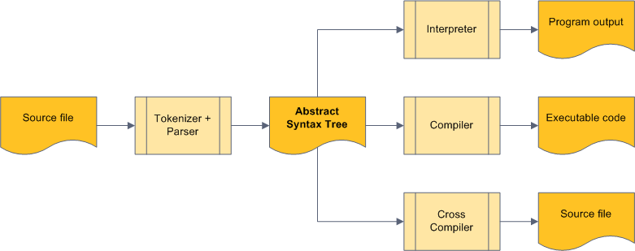

Написание простого DSL компилятора на Delphi (2. Абстрактное синтаксическое дерево)
Перевод поста Writing a Simple DSL Compiler with Delphi (2. Abstract Syntax Tree)open in new window.
Эта статья представляет собой описание абстрактного синтаксического дерева, используемого для представления "Языка". Если вы только начинаете читать эту серию, то я бы рекомендовал вам начать с этого постаopen in new window.
Пожалуйста, имейте в виду, что эта статья описывают начальную реализацию AST. Если вы хотите просматривать код во время чтения статьи, убедитесь, что вы переключились на ветку dsl_v1open in new window.
Абстрактное синтаксическое деревоopen in new window является, проще говоря, символическим представлением программы в виде дерева.
В то время как текстовое представление программы хорошо подходит для нас, людей, компьютерам тяжело с ним справляться. Поэтому специальная часть любого интерпретатора или компилятора, называемая парсерopen in new window, читает входной поток и преобразует его в машиночитаемый формат — AST. Это дерево может использоваться для множества целей. Мы можем, например, скормить его интерпретаторуopen in new window который запустит программу для нас, или мы можем скормить его компиляторуopen in new window для генерации запускаемого модуля, или кросс-компиляторуopen in new window для генерации эквивалентной программы на другом языке программирования.
В действительности, этот процесс обычно еще более сложный. Парсер использует специальный входной модуль называемый токинизаторopen in new window для чтения входного потока и компилятор обычно не создаёт исполняемый модуль напрямую, но производит несколько файлов, которые линкуются в конечную программу.
В случая моего игрушечного проекта компилятора, парсер использует отдельный токинизатор, а компилятор не создаёт запускаемый файл непорсредственно, а производит несколько файлов которые линкуютсяopen in new window в конечную программу.
В случае моего игрушечного компилятора, парсер использует отдельный токинизатор, в то время как все вроцессы вывода (такие как компилятор) генерируют код, без дополнительных шагов (например, линковки).

Достаточно очевидно, что AST является центральной частью всего проекта и поэтому я решил рассказать о нём перед токинизатором и парсером.
В моём случае (и позвольте мне напомнить вам снова, что всё последующее описание применяется к ветке dsl_v1open in new window), AST программы начинается с очень простого интерфейса ISimpleDSLAST. (я буду показывать все типы в сокращённой форме без геттеров и сеттеров).
IASTFunctions = interface
function Add(const func: IASTFunction): integer;
function Count: integer;
function IndexOf(const name: string): integer;
property Items[idxFunction: integer]: IASTFunction read GetItems; default;
end; { IASTFunctions }
ISimpleDSLAST = interface
property Functions: IASTFunctions read GetFunctions;
end;
2
3
4
5
6
7
8
9
10
Программа в "Языке" это не более чем коллекция функций и интерфейс отражает это.
Каждая функция имеет имя, список параметров и тело.
TParameterList = TList<string>;
IASTFunction = interface ['{FA4F603A-FE89-40D4-8F96-5607E4EBE511}']
property Name: string read GetName write SetName;
property ParamNames: TParameterList read GetParamNames;
property Body: IASTBlock read GetBody write SetBody;
end;
2
3
4
5
6
7
Тело функции не более чем коллекция операторов.
TStatementList = TList;
IASTBlock = interface
property Statements: TStatementList read GetStatements;
end;
2
3
4
5
Оператором является либо оператор if, либо оператор return. Других вариантов нет.
TASTStatementType = (stIf, stReturn);
IASTStatement = interface
end; { IASTStatement }
2
3
4
IASTStatement это просто родительский интерфейс для всех интерфейсов операторов и никогда не создаётся сам по себе.
Оператор return имеет только одну часть — выражение, которое вычисляется и затем возвращается в виде результат функции.
IASTReturnStatement = interface(IASTStatement)
property Expression: IASTExpression read GetExpression write SetExpression;
end;
2
3
Оператор if более сложный. Он имеет условие (которое тоже является выражением) и следующие за then и else блоки. (и, как мы уже знаем, блок это просто коллекция операторов)
IASTIfStatement = interface(IASTStatement)
property Condition: IASTExpression read GetCondition write SetCondition;
property ThenBlock: IASTBlock read GetThenBlock write SetThenBlock;
property ElseBlock: IASTBlock read GetElseBlock write SetElseBlock;
end;
2
3
4
5
Выражение может содержать слагаемое или бинарную операцию с двумя слагаемыми. На данный момент поддерживаются только три операции: сложение, вычитание и сравнение. В Языке нет унарных операторов, так вы не можете написать такой оператор return -3, а должны использовать такую форму return 0-3.
TBinaryOperation = (opNone, opAdd, opSubtract, opCompareLess);
IASTExpression = interface
property Term1: IASTTerm read GetTerm1 write SetTerm1;
property Term2: IASTTerm read GetTerm2 write SetTerm2;
property BinaryOp: TBinaryOperation read GetBinaryOp write SetBinaryOp;
end;
2
3
4
5
6
Слагаемое может быть константой, переменной или вызовом функции.
TASTTermType = (termConstant, termVariable, termFunctionCall);
IASTTerm = interface
end;
2
3
4
IASTTerm, также как IASTStatement, является родительским интерфейсом
Константа — просто числовое значение, вычислимое парсером.
IASTTermConstant = interface(IASTTerm)
property Value: integer read GetValue write SetValue;
end;
2
3
Переменные в действительности имеют неверное название. Язык не поддерживает переменные. В коде могут быть только ссылки на параметры функций. Так как вложенные функции не поддерживаются, то каждый параметр может быть представлен своим индексом в списке параметров (который, также вычисляется парсером).
IASTTermVariable = interface(IASTTerm)
property VariableIdx: integer read GetVariableIdx write SetVariableIdx;
end;
2
3
И последняя часть AST — вызов функции содержит индекс вызываемой нами функции и список параметров которые мы передаём в функцию. Параметры являются выражением.
TExpressionList = TList;
IASTTermFunctionCall = interface(IASTTerm)
property FunctionIdx: integer read GetFunctionIdx write SetFunctionIdx;
property Parameters: TExpressionList read GetParameters;
end;
2
3
4
5
В действительности, в модуле SimpleDSLCompiler.AST больше ничего нет кроме этого набора интерфейсов и очень тривиальных объектов реализующих их. Этой информации достаточно чтобы представлять семантику оригинальной программы (форматирование теряется во время парсинга) и дальше она может быть подана на вход компилятору.